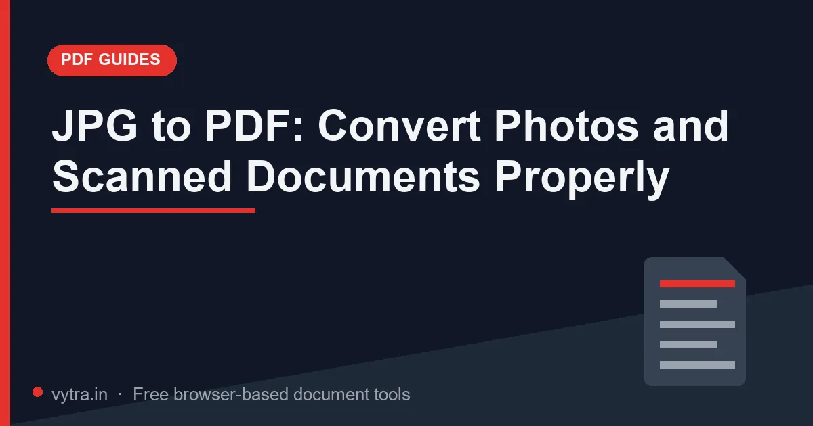

JPG to PDF: Convert Photos and Scanned Documents Properly

Exams, admissions and employers keep asking for "documents in PDF", while your documents exist as photos — pictures of certificates, a signed declaration photographed on a table, an ID card snap. Converting JPGs to a PDF sounds trivial, but the difference between a sloppy conversion and a correct one is exactly what gets forms accepted or rejected.
Quick answer: Open the JPG to PDF tool, drop your images, arrange them in page order, convert — then check the result's size and compress with Extreme if the portal has a limit. Crop images before converting; a PDF cannot fix a bad source photo.
When JPG-to-PDF is the right move
- Application bundles: photo + signature + ID images combined into the one PDF the form demands.
- Declarations and receipts: signed sheets, payment screenshots and acknowledgements that must be submitted as one document.
- Certificates received as photos: someone photographed your certificate instead of scanning it — convert, then compress properly.
- Sharing multi-image documents: a PDF preserves order and prevents the "images got jumbled in WhatsApp" problem.
Step-by-step: photos to a clean PDF
- Crop first. Remove table backgrounds, fingers, shadows and neighbouring pages from each photo. Tight, straight crops are the single biggest quality lever — a PDF wraps your image as a page, good or bad as-is.
- Fix orientation before converting. A sideways page inside the PDF forces readers to rotate views — and some portals reject it.
- Order the pages. In the tool, arrange images in reading order: first page first. Verify after conversion by flipping through.
- Convert. Drop all images into JPG to PDF, arrange, press convert. Output is a standard PDF any reader opens.
- Check size against the portal's limit. Photos carry camera resolution — a 4-image PDF can reach 3–6MB instantly. Compress with Extreme (grayscale only if the documents are scans, not ID cards or photos where colour matters).
What to expect: Photos carry camera resolution, so a four-image form bundle converts to a PDF of several MB fast. One Extreme pass afterwards commonly brings that bundle into the 100–250KB range — enough for most 200KB document slots — without retaking a single image. Check the size the tool reports before you upload; the portal checks the same number.
Your source is a photo — now what?
There is a difference between converting a well-made photo and salvaging a bad one. A well-lit photo shot parallel to the paper converts cleanly: crop, orient, convert, compress — done in a minute. A dark, angled photo with a hand shadow converts into exactly what it was: a poor image wrapped in PDF clothing. Quick triage before converting: is the text readable at full zoom on your phone? Are all four corners visible with margin? Is there glare across any stamp or signature? If any answer is no, reshoot — thirty seconds of retaking beats any amount of post-processing, because compression amplifies blur as much as it reduces size.
For documents you photograph repeatedly (IDs, licences, certificate folders), build a fixed setup once: window light, document flat on a dark table, phone held directly above. Consistent inputs make every downstream conversion boringly reliable — and every bundle you assemble afterwards fits its limits without heroics.
Page size and layout realities
- Image dimensions ≠ page size. Your phone photo (3024×4032) does not become A4 automatically — tools map images to a page, and mismatched aspect ratios leave white margins or crop edges.
- Check margins after conversion. A signature cut off at the page edge is worse than a slightly smaller image. If edges clip, crop the source image with margin and reconvert.
- One document per file when the form has separate upload slots — photo here, signature there. Only bundle what the instruction says to bundle.
Common mistakes
- Converting before cropping — shadows, table texture and stray fingers become part of the permanent document.
- Leaving screenshots unedited — a phone screenshot with status-bar icons and notifications looks unprofessional at best; crop to the relevant region.
- PNG where JPG is expected (and vice versa) — some portals validate the source format even inside PDFs; know what the form asked for.
- Ignoring the final size — conversion is not compression. Always check KB after building the PDF; see the size-error guide for what happens when you don't.
- Uploading without a page-by-page review — order mistakes and clipped edges are invisible until someone else opens it.
Pro tips
- Shoot documents near a window in daylight, phone parallel to the paper — most "bad scans" are just poor light and angled cameras.
- Keep master photos in a folder like Docs_2026/ — you will reuse them across dozens of applications.
- For repeat use, convert once into a "master PDF", then split/extract per form (split guide).
- Name the output formally: Declaration_ShivamKumar.pdf.
- If the portal wants JPG images directly (not PDF), skip conversion — resize images to the KB range instead, as covered in the photo/signature guide.
Frequently asked questions
Will converting JPG to PDF lose quality?
How do I keep the PDF under a portal's size limit?
Can I merge images from different sources into one PDF?
Do the images upload to a server during conversion?
Try it yourself: Open JPG to PDF — free, private, and it runs entirely in your browser.
Open JPG to PDF →